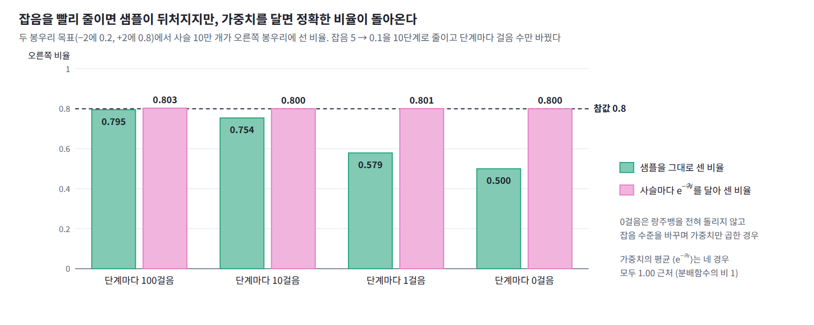
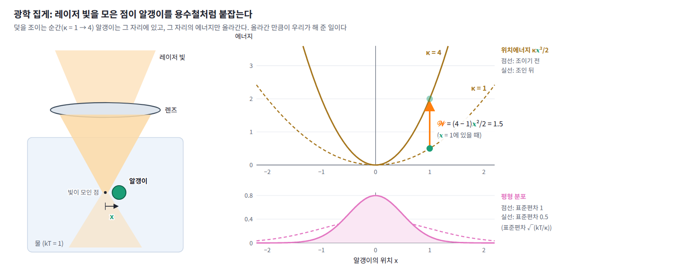
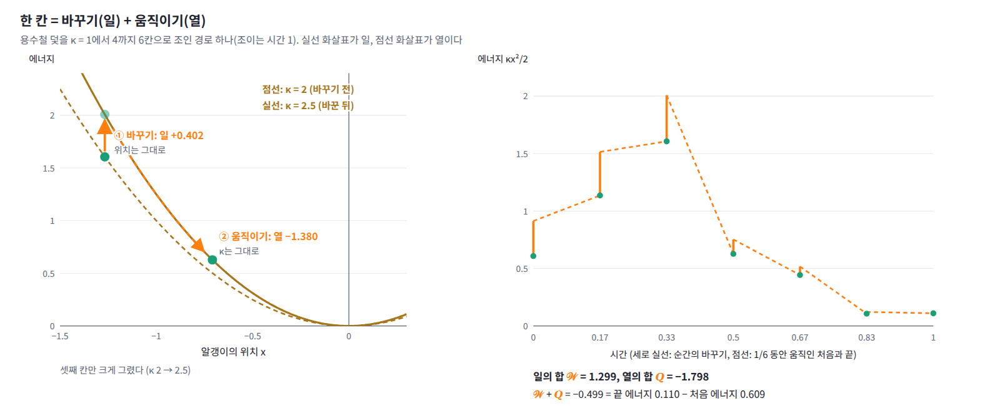

15장 — 비평형 통계역학과 야르진스키 등식
이 장의 물음
두 봉우리 분포에서 샘플을 뽑는 문제를 보자. 목표 분포는 −2와 +2에 표준편차 0.5인 봉우리가 하나씩 있고, 오른쪽 봉우리에 비중 0.8이 실려 있다. 잡음을 섞어 봉우리 사이 골짜기를 메운 분포에서 출발해, 잡음의 표준편차를 5에서 0.1까지 10단계로 줄이며 단계마다 랑주뱅 방정식을 몇 걸음씩 돌리는 방법이 송과 에르몬(2019)의 담금질 랑주뱅이다. 마르코프 사슬(따로 돌리는 샘플러 하나) 10만 개로 돌려 보면 단계마다 100걸음을 줄 때는 오른쪽 봉우리에 선 사슬의 비율이 0.795로 참값 0.8에 가깝지만, 10걸음이면 0.754, 1걸음이면 0.579로 뒤처진다. 분포를 바꾸는 빠르기를 샘플이 따라가지 못하는 것이다.
그런데 사슬마다 수 하나를 더 기록해 두면 이 뒤처짐을 정확히 되돌릴 수 있다. 잡음 수준을 바꾸는 순간에는 샘플이 그대로 있고 에너지 −ln p만 바뀐다. 그 바뀐 양을 사슬마다 모두 더한 값을 𝒲라 하고, 끝에서 사슬마다 e^(−𝒲)를 가중치(샘플마다 곱해 세는 중요도 가중치. 신경망의 가중치와는 다르다)로 달아 비율을 다시 세어 보자. 단계마다 100걸음, 10걸음, 1걸음을 준 세 경우 모두 0.803, 0.800, 0.801이 나오고, 랑주뱅을 한 걸음도 돌리지 않고 가중치만 달아도 0.800이다. 가중치의 평균 ⟨e^(−𝒲)⟩도 네 경우 모두 1.00 근처에 머문다.

샘플 자체는 목표 분포에 한참 못 미쳤다. 그런데 사슬마다 수 하나를 곱해 다시 세었을 뿐인데 어떻게 참값이 정확히 돌아올까? 이 물음은 몇 갈래로 나뉜다.
- 평형에 이를 시간을 주지 않고 끌고 다닌 샘플에서, 평형 분포의 양을 정확히 얻을 수 있는 까닭은 무엇일까?
- 랑주뱅을 한 걸음도 돌리지 않아도 답이 맞는다면, 걸음을 주는 것은 무엇을 얻기 위해서일까?
- 같은 걸음 수를 쓴다면 잡음을 줄이는 단계를 몇 개로 나누는 것이 좋을까?
- 가중치의 평균에 로그를 씌운 값은 왜 한쪽으로 치우쳐 나올까?
- 확산 모델을 처음 제안한 논문의 제목에는 왜 「비평형 열역학」이라는 말이 들어 있을까?
일: 덫을 조이는 데 드는 에너지
첫머리에서 사슬마다 더해 둔 𝒲는 잡음 수준을 바꾸는 순간, 샘플은 그대로 둔 채 에너지만 바뀐 양이었다. 샘플이 움직이며 바뀐 에너지는 세지 않았다. 왜 하필 이렇게 나눠 세었을까? 에너지를 이렇게 나누는 방법은 물리에서 먼저 나왔으니, 가장 단순한 물리계에서 보자.
용수철 덫 조이기
물속에 뜬 알갱이 하나가 용수철처럼 작용하는 덫에 붙잡혀 있다. 레이저 빛을 한 점에 모아 만드는 광학 집게가 이런 덫이다. 알갱이가 덫의 가운데서 x만큼 벗어나면 위치에너지가 κx²/2이고, κ는 덫이 얼마나 단단한지를 나타내는 용수철 상수다. 물의 온도는 kT = 1로 두고, 알갱이는 처음에 κ = 1인 덫 안에서 평형을 이루고 있다. 그래서 알갱이의 위치는 평균 0, 분산 kT/κ = 1인 정규분포를 따른다.
이제 덫을 조여 κ를 1에서 4로 올린다. κ를 올리는 순간 알갱이가 어디에 있든 그 자리의 에너지가 올라가므로, 우리가 계에 일을 해 준 것이다. 알갱이가 x에 있을 때 κ를 dκ만큼 올리면 에너지가 x² × dκ/2만큼 늘고, 조이는 동안 이것을 모두 더한 값이 한 번 조이는 데 든 일 𝒲다. 조이는 동안 알갱이는 가만히 있지 않고 랑주뱅 방정식을 따라 움직인다. 덫을 한순간에 조이면 알갱이가 움직일 틈이 없고, 천천히 조이면 알갱이가 좁아지는 덫을 따라 가운데로 모여들어 κ를 올릴 때마다 드는 일이 줄어든다.

일과 열
덫에서는 κ를 올리는 순간 알갱이가 있던 자리의 에너지가 늘어난 양을 일이라 불렀다. 그런데 조이는 동안 알갱이도 움직이므로 에너지는 두 가지 까닭으로 바뀐다. 덫이 아닌 다른 계, 예컨대 첫머리의 두 봉우리 사슬에서도 같은 계산을 하려면 이 둘 가운데 무엇을 일로 세어야 할까?
덫의 용수철 상수처럼 바깥에서 조절하는 매개변수를 λ라 하고, 그 값에 따라 위치에너지가 U_λ(x)로 정해진다고 하자. 매개변수를 λ₀에서 λ₁로 바꾸는 과정을 잘게 나누면, 한 칸마다 두 가지 변화가 번갈아 일어난다. 먼저 알갱이는 그 자리에 둔 채 매개변수만 λ_(k−1)에서 λ_k로 바꾸고, 다음으로 매개변수는 그대로 둔 채 알갱이가 열원과 부딪히며 x_(k−1)에서 x_k로 움직인다. 앞의 것이 바꾼 에너지를 모두 더한 것이 일이고, 뒤의 것이 바꾼 에너지를 모두 더한 것이 열이다.
𝒲를 일 (위치를 그대로 둔 채 매개변수를 바꿀 때 계의 에너지가 늘어난 양, work)이라 하고, 나머지 몫인 Q, 곧 매개변수를 그대로 둔 채 계가 움직이며 열원과 주고받은 에너지를 열(heat)이라 한다. 일을 필기체 𝒲로 쓰는 것은 경우의 수 W와 구별하기 위해서다. 둘을 더하면 처음과 끝의 에너지 차이가 되는데, 이것은 경로 하나하나에서 성립하는 에너지 보존, 곧 열역학 제1법칙이다.

조이는 빠르기와 일
그렇다면 덫을 조이는 빠르기는 일에 어떤 영향을 줄까? 같은 실험을 10만 번 되풀이하며 조이는 데 걸리는 시간을 0(한순간), 0.1, 1, 10으로 바꿔 보자. 조일 때마다 일 𝒲를 재어 그 평균과, e^(−𝒲)의 평균에 −ln을 씌운 값을 구하고, 다 조인 순간 알갱이 위치의 제곱 평균도 함께 적었다.
| 조이는 시간 | 일의 평균 ⟨𝒲⟩ | −ln⟨e^(−𝒲)⟩ | 끝에서 ⟨x²⟩ |
|---|---|---|---|
| 0 (한순간) | 1.500 | 0.6932 | 1.000 |
| 0.1 | 1.374 | 0.6957 | 0.758 |
| 1 | 0.937 | 0.6933 | 0.289 |
| 10 | 0.726 | 0.6938 | 0.252 |
세 가지가 눈에 띈다. 첫째, 일의 평균은 천천히 조일수록 줄어서 한순간에 조이면 1.500이던 것이 시간 10에서는 0.726이 된다. 둘째, 다 조인 순간의 알갱이는 새 덫의 평형에 있지 않다. κ = 4인 덫의 평형 분산은 kT/κ = 0.25인데, 한순간에 조이면 알갱이의 분포가 옛 덫의 것 그대로(1.000)이고 시간 0.1에서도 0.758로 한참 뒤처져 있다. 셋째, 그런데 e^(−𝒲)의 평균으로 계산한 마지막 칸은 조이는 빠르기와 상관없이 모두 0.693 근처다.
빠르기에 따라 일의 평균은 두 배 넘게 달라지는데 왜 지수 평균은 그대로일까? 0.693이라는 수는 무엇이고, 천천히 조일수록 일의 평균이 이 수에 다가가는 것처럼 보이는 까닭은 무엇일까?
한순간에 조이기
0.693부터 풀어 보자. 분배함수 Z에 대해 자유에너지는 F = −kT ln Z이고, 용수철 상수가 κ인 덫의 분배함수는 가우스 적분 Z(κ) = ∫e^(−κx²/2kT)dx = √(2πkT/κ)이므로, κ = 1인 덫과 κ = 4인 덫의 자유에너지 차이는 ΔF = −kT ln(Z(4)/Z(1)) = (kT/2) ln 4 = kT ln 2다. kT = 1이면 0.693이다. 마지막 칸은 조이는 빠르기와 상관없이 두 덫의 자유에너지 차이를 준 것이다.
한순간에 조이는 경우는 손으로 확인할 수 있다. 알갱이가 움직일 틈이 없으므로 일은 처음 위치 하나로 정해져 𝒲 = (4 − 1)x²/2 = 1.5x²이고, x²의 평균이 1이니 일의 평균은 1.5kT다. 한편 e^(−β𝒲)의 평균은 처음 분포 위에서 에너지 차이의 지수를 평균한 것이어서, 적분 안에서 옛 에너지가 지워지고 새 에너지만 남는다.
덫에서는 Z(4)/Z(1) = 1/2이고, 표의 첫 줄이 0.6932 = −ln 0.5000을 준 까닭이 이것이다. 이 계산은 한 가지를 더 알려 준다. 옛 분포에서 뽑은 샘플에 e^(−β𝒲)를 곱하면 적분 안에서 옛 분포가 새 분포로 바뀌므로, 옛 덫에 머물러 있는 알갱이들도 이 가중치를 달면 새 덫의 평형 분포를 나타낸다. 실제로 한순간에 조인 알갱이들의 ⟨x²⟩는 1.000이지만 e^(−𝒲)로 가중해 평균하면 0.251로 새 평형의 0.25가 된다. 이처럼 옛 분포에서 뽑은 샘플로 에너지 차이의 지수 평균을 내어 두 상태의 자유에너지 차이를 구하는 방법을 자유에너지 섭동(섭동은 작게 건드려 본다는 뜻. 한순간에 바꾼 에너지 차이의 지수 평균으로 자유에너지 차이를 얻는 방법, free energy perturbation)이라 하고, 1954년 츠반치히가 이 식을 적었다.
ML에서: 잡음 수준을 바꾸는 순간의 일
첫머리의 담금질 랑주뱅에서는 잡음 수준이 바깥에서 조절하는 매개변수 λ이고, kT = 1로 두면 에너지는 −ln p다. 잡음 수준을 바꾸는 순간에는 샘플이 그대로 있으므로 그때 바뀐 −ln p가 일이고, 한 수준 안에서 랑주뱅 걸음으로 움직이며 바뀐 몫은 열이다. 첫머리에서 사슬마다 더해 둔 𝒲는 이 일의 합이다.
ML에서: 중요도 가중치
가중치 e^(−β(U₁ − U₀))는 새 분포의 정규화 전 밀도(합이 1이 되게 나누기 전의 밀도)를 옛 분포의 정규화 전 밀도로 나눈 값이다. ML에서는 이런 밀도 비를 중요도 가중치라 부르고, 한 분포에서 뽑은 샘플에 이 비를 곱해 다른 분포의 평균을 내는 방법을 중요도 샘플링이라 한다. 오프폴리시 강화학습이 옛 정책으로 모은 데이터로 새 정책을 평가할 때 두 정책의 확률 비를 곱하는 것도 같은 계산이다. 자유에너지 섭동은 정규화 전 밀도로 만든 그 가중치의 평균이 곧 두 분배함수의 비라는 것을 알려 준다.